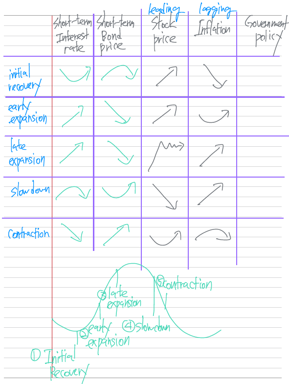

Capital Market Expectations
LOS 3.a: Discuss the role of, and a framework for, capital market expectations in the portfolio management process.
- top-down을 위한 the highest view를 formulation하기 위한 과목
- 경기 국면에 따라 주요 자산군의 return, risk, covariance 결정
Cross-sectional consistency refers to consistency across asset classes regarding portfolio risk and return characteristics. Intertemporal consistency refers to consistency over various investment horizons regarding portfolio decisions over time.
To formulate capital market expectations, an analyst should use the following seven-step process:
- Determine the specific capital market expectations needed according to the investor’s allowable asset classes and investment horizon(s). Time horizon is particularly important in determining the set of capital market expectations that are needed.
- Investigate assets’ historical performance to determine the drivers that have affected past performance and to establish some range for plausible future performance.
- Identify the valuation model to be used and its requirements.
- Collect the best data possible.
- Use experience and judgment to interpret current investment conditions and decide what values to assign to the required inputs.
- Monitor performance and use it to refine the process for setting expectations. If actual performance varies significantly from forecasts, the process and model should be refined.
Information needed to support the investment process includes:
- Geography
- Major asset classes
- Sub-asset classes
LOS 3.b: Discuss challenges in developing capital market forecasts.
Nine problems encountered in producing forecasts
- limitations to using economic data
- data measurement error and bias
- limitations of historical estimates
- the use of ex-post risk and return measures
- non-repeating data patterns
- failing to account for conditioning information
- misinterpreting of correlations
- psychological bias
- model uncertainty
Limitations to using economic data
- time lag
- revised and the revisions
- rebased over time
Data measurement errors and biases
- transcription errors - 잘못 옮겨 씀
- survivorship bias
- risk downward
- historical return upward
- appraisal data
- illiquid and infrequently priced assets
- downward the calculated standard deviation and makes the returns seems less correlated (closer to 0) with more liquid priced assets
- correlation을 과소평가해서 잘못 diversification 할 risk
Limitations of historical estimates
- regime changes
- nonstationary data
Two questions can be used to help resolve the issue of which time period to select:
- Is there a reason to believe the entire (longer) time period is not appropriate?
- If the answer to the first question is yes, does a statistical test confirm there is a regime change and the point in the time series where it occur?
If both answers are yes, the analyst must use judgment to select the relevant subperiod.
A long time period is preferable for several reasons:
- statistically required
- more precise statistical estimates with smaller variance to the estimate
- more frequent data points are often more likely to have missing or outdated values (asynchronous data) and can result in distorted correlation calculations.
In addition to selecting time periods, caution should be exercised when data are assumed to be normally distributed. Asset returns have historically exhibited “fat tails” and skewness, which add complexity to statistical tests. In some cases, the benefits of accounting for non-normality might not outweigh the costs of introducing complexity to a model.
Ex post data
Using ex post data (after the fact) to determine ex ante (before the fact) risk and return can be problematic. In sum, the analyst would underestimate the risks that equity investors face and overestimate their potential returns. This issue could also lead to an overestimation of risk when sample data include rare negative events.
Data mining, time period bias
To avoid these biases, an analyst should first ask if there is any economic basis for the variables found to be related to stock returns. (이론적 base가 있는지 check) Second, he should scrutinize the modeling process for susceptibility to bias. (modeling check) Third, the analyst should test the discovered relationship with out-of-sample data to determine if the relationship is persistent.
Conditional information
Analysts forecasts may also fail to account for conditioning information. Thus, analysts should account for current conditions in their forecasts.
Misinterpretation of correlations (causality)
It is also possible that the correlation between two variables is spurious or that a third variable influences both variables. In addition, two variables may have a nonlinear relationship that is missed by the correlation statistics, which measures linear relationships.
Psychological biases
- anchoring bias (cognitive) - the first information received is overweighted.
- order가 중요, first가 keyword
- status quo bias (emotional) - predictions are highly influenced by recent past, making an active error of commission
- 관성
- confirmation bias (cognitive) - only information supporting the existing belief is considered, and such evidence may be actively sought while other evidence is ignored. To counter these tendencies, analysts should give all evidence equal scrutiny and seek out contrary opinions.
- 답정너
- overconfidence bias (emotional) - past mistakes are ignored, the lack of comments from others is taken as agreement, and the accuracy of forecasts is overestimated.
- narrow estimate range
- prudence bias (cognitive) - forecasts are overly conservative to avoid the regret from making extreme forecasts
- broad estimate range, afraid to fail
- availability bias (cognitive) - what is easiest to remember (often an extreme event) is overweighted. Many believe that the U.S. stock market crash of 1929 may have depressed equity values in the subsequent 30 years.
- recallability
Model uncertainty
parameter uncertainty, input uncertainty
model - parameter - input
LOS 3.c: Explain how exogenous shocks may affect economic growth trends.
The trend rate of growth
In general, economic growth can be partitioned into cyclical variations and growth trends. (경제성장 변동론)
Economic growth trends are subject to unexpected surprises or shocks that are exogenous to the economy.
Exogenous shocks are unanticipated events that occur outside the normal course of an economy. Because the events are unanticipated, they are not already built into current market prices, whereas normal trends in an economy, which would be considered endogenous, are built into market prices. Note that the impact of these events will likely produce statistical regime changes. Exogenous shocks can be cause by several factors:
- Changes in government policies
- sound fiscal policy, minimal government interference with free markets, facilitating competition in the private sector, development of infrastructure and human capital, and sound tax policies
- Political events
- Geopolitical tensions that divert resources to less productive uses may lead to decreases in growth. Conversely, cuts in defense spending due to higher level of world peace may lead to increase in growth.
- Technical progress
- Natural disasters
- Natural disasters likely reduce short-term growth, but may (arguably) encourage long-term growth if more efficient capacity replaces previous capacity.
- Discover of natural resources
- enhance growth
- Financial crises
- reduce the level of economic output in the short term and may also decrease the trend rate of growth.
LOS 3.d: Discuss the application of economic growth trend analysis to the formulation of capital market expectations.
The trend rate of growth is an important input when setting capital market expectations.
Key considerations
- Forecasting returns with DCF models incorporate the trend rate of growth. The trend rate of growth acts as an anchor for long-term bond and equity returns.
- Higher trend growth rates may lead to higher stock returns assuming the growth is not already reflected in stock prices.
- The economy can grow at a faster pace before inflation becomes a major concern.
- Higher trend growth rates tend to generate higher government bond yields.
Overall, the trend rate of growth is relatively stable in developed economies. In emerging economies, that growth rate can be less predictable and include longer periods of rapid growth as those economies catch up with developed economies.
A basic model for forecasting the economic growth rate focuses on the following:
- Labor input (L) - labor force and labor participation, real wage, work/leisure decisions, and social factors
- Capital per worker (K)
- Total capital productivity (A)
Labor productivity - capital per worker and total capital productivity
LOS 3.e: Compare major approaches to economic forecasting.
Econometric analysis
Econometric analysis uses statistical methods to explain economic relationships and formulate forecasting models.
Advantages
- Modeling can incorporate many variables
- Once the model is specified, it can be reused
- Output is quantified and based on a consistent set of relationship
Disadvantages
- Models are complex and time-consuming to construct
- The data may be difficult to forecast and the relationships can change
- Output may require interpretation or be unrealistic
- It does not work well to forecast turning points
Economic indicators
Leading indicators that move ahead of the business cycle. The leading indicators can be used individually or as a composite. Traditionally, three consecutive months of increase (decrease) for the index are expected to signal the start of an economic expansion (contraction) within a few months.
There are also coincident and lagging indicators that move with and after changes in the business cycle.
Advantages
- Economic indicators are simple, intuitive, and easy to interpret
- Data are often readily available from third parties
- Indicators lists can be tailored to meet specific forecasting needs
Disadvantage
- Forecasting results have been inconsistent
- Economic indicators have given false signals
- Indicators are revised frequently, which can make them appear to fit past business cycles better than they did when the data were first released.
Checklist approach
A checklist approach is more subjective. An analyst consider a series of questions. The analyst uses judgment and perhaps some statistical modeling to interpret the answers and formulate a forecast.
Advantages
- less complex than econometrics
- Flexible in mixing objective statistical analysis with judgment to incorporate changing relationships
Disadvantages
- subjective
- time-consuming
- Complexity must be limited due to manual process
LOS 3.f: Discuss how business cycles affect short- and long-term expectations.
Any deviation from this trend to cancel out over the long run; however, identifying these deviations can be very useful when making shorter-term projections. Fluctuations in economic growth over short to intermediate time horizons are often associated with the business cycle.
A fundamental reason why economic activity is cyclical is the nature of business decisions. Decision makers allocate resources to what they believe are their highest valued uses, but can only do so with imperfect information. Adjustments to unexpected events take time to implement and reversing incorrect decisions can be costly.
Their relationship is not straightforward
- Business cycles vary in duration and intensity.
- It can be difficult to distinguish which effects result from shorter-term factors that arise from the business cycle and which are related to longer-term factors that affect the trend rate of economic growth.
- Returns in the capital market are strongly related to activity in the real economy, but they also depend on factors such as investors’ expectations and risk tolerances.
Business cycle analysis is most useful for identifying opportunities within the time horizon of a typical business cycle. For longer investment horizons that are likely to include one or more full business cycles, information about the current state of the economy is less valuable.
Business cycle phases


Initial recovery
- Duration of a few months
- business confidence rising
- government stimulus provided by low interest rates and/or budget deficits
- decelerating inflation
- inflation 둔화, not deflation
- low or failing short-term interest rates
- bond yields bottoming out
- rising stock prices
- cyclical, riskier assets such as small-cap stocks and high yield bonds doing well
Early expansion
- duration of a year to several years
- increasing growth with low inflation
- increasing confidence
- rising short-term interest rates
- output gap is narrowing
- stable or rising bond yields
- rising stock prices
Late expansion
- high confidence and employment
- output gap eliminated and economy at risk of overheating
- increasing inflation
- central bank limits the growth of the money supply
- rising short-term interest rates
- rising bond yields
- rising/peaking stock prices with increased risk and volatility
Slow down
- Duration of a few months to a year or longer
- declining confidence
- inflation still rising
- short-term interest rates at a peak
- bond yields peaking and possibly falling, resulting in rising bond prices
- possible inverting yield curve
- falling stock prices
Contraction
- duration of 12 to 18 months
- declining confidence and profits
- increase in unemployment and bankruptcies
- inflation topping out
- falling short-term interest rates
- falling bond yields, rising prices
- stock prices increasing during the latter stages, anticipating the end of the recession.
LOS 3.g: Explain the relationship of inflation to the business cycle and the implications of inflation for cash, bonds, equity, and real estate returns.
Inflation means generally rising prices.
Disinflation means a deceleration in the rate of inflation.
Deflation means generally falling prices. Deflation is a severe threat to economic activity for the following reasons:
- It encourages default on debt obligations.
- inflation 상황에서는 notional value라서 debt를 갚기 편함.
- With negative inflation, interest rates decline to near zero and this limits the ability of central banks to lower interest rates and stimulate the economy. Following the financial crisis of 2007-2009 and the resulting very low interest rates, several central banks tried a new monetary policy of quantitative easing (QE) to stimulate the economies of their countries. Traditionally, central banks have used open market operations to increase the money supply and decrease short-term interest rates on a temporary basis by buying high quality fixed-income instruments. QE was different in that it was larger in scale, the purchases included other security types such as mortgage-backed securities and corporate bonds, and the intent was a long-term increase in bank reserves.
- short-term interest rate에 economy가 sensitive 해야 함
Investors generally expect that equity and bond prices will reflect some level of positive inflation.
LOS 3.h: Discuss the effects of monetary and fiscal policy on business cycles.
Monetary policy
Central banks often use monetary policy as a countercyclical force, attempting to optimize the economy’s performance. Most central banks strive to balance price stability against economic growth. The ultimate goal is to keep growth near its long-run sustainable rate, because growth faster than the long-run rate usually results in increased inflation.
To spur growth, a central bank can take actions to reduce short-term interest rates. This results in greater consumer spending, greater business spending, higher stock prices, and higher bond prices. Lower interest rates also usually result in a lower value of the domestic currency, which is thought to increase exports. In addition to the direction of change, the level of interest rates is important. The equilibrium interest rate in a country (the rate at which a balance between growth and inflation is achieved) is referred to as the neutral rate. It is generally thought that the neutral rate is composed of an inflation component, a real growth component, and judgment from policy makers.
The neutral rate is the rate that most central banks strive to achieve as they attempt to balance the risks of inflation and recession.
Taylor rule
(nominal) neutral interest rate = real interest rate + inflation expected
Negative interest rates
Negative interest rates were generally considered a hypothetical curiosity before the 2007-2009 financial crisis. A negative rate is defined as a net payment made to keep money on deposit at a financial institution or payment of a net fee to invest in short-term instruments.
Zero was regarded as the sustainable lower rate of interest because investors could hold physical cash instead (earning no interest). As investors withdrew funds from banks to hold cash, bank balance sheets would shrink as they paid out funds and stopped making loans. Simply supply and demand analysis should dictate that with a smaller supply of funds available to lend, the price paid (interest rate) to borrow increases.
The flaw in this analysis was that negative interest rates did not cause the expected large move into physical cash. The daily exchange of funds in modern economies is too large. The implicit advantages of being able to quickly transfer large amounts of money held on deposit to settle transactions outweighed the explicit cost of holding those deposits at negative rates. Without the exit of funds from the banking system, it turned out that negative interest rates were sustainable for extended periods.
As mentioned earlier, the slowdown in economic activity during the crisis and already very low interest rates led some central banks to experiment with less-tested monetary policy-QE approach. QE led to larger injections of funds by central banks into the commercial banking system with the announced intent that these injections were long term in nature. The hope was this would stimulate bank lending and increase economic activity.
Negative interest rates should, in theory, have similar effects. Holders of funds would find it more desirable to spend the money, stimulating economic activity; or, they would invest in longer-term stocks and bonds, driving up prices and creating a wealth effect. Or, negative rates would lead consumers and businesses to borrow at zero or native rates to spend now.
Negative interest rates complicate the process of forming capital market expectations:
- The risk-free rate is the starting point for buildup models used to estimate long-run returns for asset classes. When the risk-free rate is negative, a sustainable expected risk-free rate, such as the policy neutral rate in the Taylor rule, is more appropriate as that starting point. That rate is generally not regarded as fully risk free, so a modest default premium can be removed.
- Forming capital market expectation over shorter time horizon is further complicated by a need to forecast the time path over which negative rates will converge to a long-run sustainable risk-free rate. Multiple path projections should be considered to allow for uncertainty regarding how the convergence will occur.
- Another approach to shorter-term projections of asset class returns is to interpret negative risk-free rates as being consistent with contraction or early recovery stages of the business cycle.
- Using historical data as a starting point for forecasting is more problematic because few comparable periods exist, and the negative rates suggest significant structural economic changes are occurring. This kind of regime change makes statistics based on historical data less reliable.
Fiscal policy
tax / government spending adjustment
There are two important aspects to fiscal policy. First, it is not the level of the budget deficit that matters-it is the change in the deficit. Second, changes in the deficits that occur naturally over the course of the business cycle are not stimulative or restrictive.
LOS 3.i: Interpret the shape of the yield curve as an economic predictor and discuss the relationship between the yield curve and fiscal and monetary policy.
The yield curve demonstrates the relationship between interest rates and the maturity of debt securities.
Fiscal and monetary policies may reinforce or conflict with each other.
- If both policies are stimulative, the yield curve is steep and the economy is likely to grow.
- If both policies are restrictive, the yield curve is inverted and the economy is likely to contract.
- If monetary policy is restrictive and fiscal policy is stimulative, the yield curve is flat and the implications for the economy are less clear.
- If monetary policy is stimulative and fiscal policy is restrictive, the yield curve is moderately steep and the implication for the economy are less clear.
In terms of the business cycle, the yield curve is typically steep at the bottom of the cycle. As the cycle moves toward expansion, the curve tends to flatten. At the top of the cycle, the yield curve will likely to be flat to inverted. During contraction, the curve will begin to re-steepen.
LOS 3.j: Identify and interpret macroeconomic, interest rate, and exchange rate linkages between economies.
International considerations
Macroeconomic links can produce convergence in business cycles among economies.
A country’s current account and capital account are measures of macroeconomic linkages. The current account largely consists of a country’s net exports while the capital account reflects net investment flows. The two accounts are opposites of each other in that a surplus in one account will produce a deficit in the other.
Interest rates and currency exchange rates can also create linkages. A strong link is created when a smaller economy “pegs” its currency to that of a larger and more developed economy. The peg is a unilateral declaration by the pegging country to maintain the exchange rate. (independent interest rate control을 포기하고 stable exchange rate을 추구) As the pegged currency country must follow the economic policies of the country to which it has pegged its currency.
Generally, the interest rates of the pegged currency will exceed the interest rates of the currency to which it is linked, and the interest rate differential will fluctuate with the market’s confidence in the peg. If confidence is high, the rate differential can be small. If there is doubt the peg will be maintained, investors will require a larger interest rate differential as compensation for the risk of holding the pegged currency. A common problem arises if investors begin to lose confidence in the pegged currency and it begins to decline in value. The pegging country must then increase short-term interest rates to attract capital and maintain the value of the currency at the peg.
In the absence of pegging, the relationship of interest rate differentials and currency movement can reflect several factors:
- If a currency is sustainability overvalued and expected to decline, bond interest rates are likely to be higher to compensate foreign investors for the expected decline in the currency value.
- Relative bond yields, both nominal and real, increase with strong economic activity and increasing demand for funds.
- Savings and investment decisions as well as capital productivity drive the level of real rates. Although real rates may differ across countries, there is a tendency for them to move up and down together given that global savings and investing are linked through the current account.
LOS 4.a: Discuss approaches to setting expectations for fixed-income returns.
Introduction
Make sure you are able to distinguish between risk analysis techniques used for developed and emerging market economies.
Investment techniques assume that investments tend to return to their fundamental levels over time, knows as central tendency. There are three approaches to forecasting capital market expectations: formal tools (generally accepted), surveys, and judgments.
Formal tools
Statistical methods involve sample statistics, shrinkage estimation (instinct mixed), and time series estimation. Sample statistics use well-known data, including means, variance, and correlation, to forecast future data. This is the clearest approach in forecasting, but it can be imprecise. Alternatively, a shrinkage estimate can be applied to the historical estimate if the analyst believes simple historical results do not fully reflect expected future conditions. A time series estimate forecasts a variable using lagged values of the same variable and combines it with lagged values of other variables, which allows for incorporating dynamics (volatilities) into the forecasts.
Discounted cash flow models express the intrinsic value of an asset as the present value of future cash flows. The advantage of these models is their correct emphasis on the future cash flows of an asset and the ability to back out a required return.
Risk premium or buildup model. Risk premium approaches can be used for both fixed income and equity. The approach starts with a risk-free interest rate and then adds compensation for priced risks, or risks for which an investor would want to be compensated. Risk premium models include equilibrium models (e.g., the Capital Asset Pricing Model), a factor model, and building blocks.
Surveys and judgment
Capital market expectations can also be formed suing surveys, which can be the most useful ways to gauge consensus.
Judgement can also be applied to project capital market expectations by using qualitative information based on experience.
Forecasting fixed income returns
Forecasting fixed income returns can be done through the discounted cash flow (DCF) model, the risk premium approach, or the equilibrium model.
DCF Analysis
The DCF analysis of fixed income securities is useful when there are known future cash flows, or when cash flows can be estimated reasonably accurately. The DCF analysis supports the use of yield to maturity (YTM) as an estimate of expected return. For bond portfolios, the YTM is the weighted average of the portfolio bonds’ individual YTMs, which is generally considered a good approximation.
The assumption of holding the bond to maturity does not factor in optionality, which may result in cash flows not being received as expected. However, even if all expected cash flow are received, there are several reasons why the bond’s realized return may deviate from the initial YTM. First, an investor may sell the bond prior to maturity, generating a capital gain or loss. Second, rising or falling interest rates may result in not only changing bond prices, but changing reinvestment returns. The overall gain or loss to the investor will depend on the investment horizon. For an investment horizon that is shorter than the Macaulay duration, the capital gain/loss impact will be more dominant than the reinvestment impact, meaning for example that falling (rising) interest rates will result in a higher (lower) realized return. For an investment horizon longer than the Macaulay duration, the reinvestment risk dominates, meaning that falling (rising) interest rates will result in a lower (higher) realized return.

The risk premium (building block) approach
The building block approach starts with a risk-free rate and then adds compensation for additional risk.
The short-term default-free rate
The short-term default-free rate matches the forecast horizon and is calculated from the most liquid investment. As a result, it is closest to the government zero-coupon yield and is closely tied to the central bank policy rate. When the investment horizon is much longer than the maturity of the short-term instrument, alternative approaches may be optimal, either by using the yield of a longer maturity zero-coupon bond, or taking the return that could be realized by rolling over the short-term instrument over the investment horizon. Futures contract rates provide useful proxies for this expected path of short-term interest rates.


Term premium
While the rates implied from the spot yield curve gives us useful information about the term premium, the real term premium cannot be derived from the yield curve alone. Empirical evidence suggests that the term premiums are positive and are related to duration. There are four primary drivers of the term premium
- inflation uncertainty - Higher inflation levels typically correspond to higher inflation uncertainty, causing nominal yields to rise and the term premium to increase.
- recession hedge - When inflation is caused by strong aggregate demand, nominal bond returns are negatively correlated with growth, corresponding to low term premiums. When inflation is caused by aggregate supply, nominal bond returns are positively correlated with growth, corresponding to higher term premiums.
- supply and demand - The relative supply of short- and long-term default-free bonds determines the slope of the yield curve, which influences the level of term premiums.
- business cycles
- other indicators
- ex ante (forecast) real yield
- Cochrane and Piazzesi curve factor
- Kim and Wright premium
- Slope of the yield curve
- Supply indicator
- Cyclical proxies
Credit premium
The credit premium compensate for the expected level of losses and for the risk of default losses, both of which are components of the credit spread.
Empirical evidence suggests that while average yield spreads include a small return premium, the premiums earned tend to be uneven and are subject to significant clustering of persistent high and low default rates. (default rate이 credit premium에 완전히 잘 반영되어 있지는 않다) As a result, the yield spread is typically not considered a good predictor of future default rates. The financial market variables with the strongest predictive power of the credit spread are stock returns, stock volatility, and the risk-free rate, while GDP growth and default rate changes do not have strong predictive capabilities.
Bonds with very high credit quality (AAA and AA) have extremely low default rates, and their credit premium and spreads are mainly driven by downgrade bias-this is an asymmetrical risk indicating that a downgrade is more likely than a credit improvement or an upgrade. The credit premium and spreads of low(er) rated bonds, especially non-investment grade bonds, reflect much higher compensation for credit risk.
Credit premiums are not positively related to maturity. In fact, credit premiums tend to be higher at shorter maturities, possibly due to event risk (defaults are large credit negative events, but a bond will not pay more than its face value), and illiquidity (bonds with a short time left to maturity tend to be illiquid older bonds that are not actively traded). To take advantage of these credit features, portfolio managers often use a barbell strategy, in which they take on credit risk from shorter maturity bonds and take duration risk from long maturities.
Liquidity premium
Liquidity tends to be the highest at the earliest stages of a bond’s like, typically during the first few weeks only. As a general rule, liquidity is higher for bonds that are 1) issued at close to par or market rates, 2) new, 3) large in size, 4) issued by a frequent and well-known issuer, 5) simple in structure, and 6) of high credit quality.
LOS 4.b: Discuss risks faced by investors in emerging market fixed-income securities and the country risk analysis techniques used to evaluate emerging market economies.
Emerging market bond risk
Emerging market debt offers the investor high expected returns at the expense of higher risk. Many emerging countries are dependent on foreign borrowing, which can later create crisis situations in their economy, currency, and financial markets.
Many emerging countries also have unstable political and social systems. their undiversified nature makes them susceptible to volatile capital flows and economic crises.
Signs that an emerging market is more susceptible to risk include:
- wealth concentration
- income concentration and less diverse tax base
- greater dominance of cyclical industries, including commodities and less pricing power
- restrictions on capital flows and trade; currency restrictions
- poor workforce education and infrastructure and weak technological advancement
- inadequate fiscal and monetary policies
- large amounts of foreign borrowing in foreign currencies
- less developed and smaller financial markets
- exposure to volatile capital flows
Several guidelines that look at the health of an emerging market. Potential bond investors should look at these factors before committing to invest funds in these markets:
- to gauge fiscal policy, most analysts examine the deficit-to-GDP ratio. Ratios greater than 4% indicate substantial credit risk. The debt-to-GDP ratio of 70% to 80% has been troublesome for emerging countries.
- Fiscal deficit to GDP < 4%
- To compensate for the higher risk in these countries, investors should expect a real growth rate of at least 4%.
- A current account deficit exceeding 4% of GDP has been a warning sign of potential difficulty.
- Current account deficit to GDP < 4%
- Foreign debt levels greater than 50% of GDP indicate that the country may be overleveraged. Debt levels greater than 200% of the current account receipts also indicate high risk.
- Debt to GDP < 70%
- Foreign exchange reserves less than 100% of short-term debt is a sign of trouble (greater than 200% is considered strong).
- Foreign reserve to short-term debt < 100%
The government’s stance regarding structural reforms and property rights is important. If the government is supportive of structural reforms necessary for growth, then the investment environment is more hospitable. When the government is committed to responsible fiscal policies, competition, and the privatization of state-owned businesses, there are better prospects for growth. Weak enforcement laws, property rights laws, nationalization of property, and corruption are hazard signs. Coalition governments are also seen as riskier because of the inherent political, and therefore policy, instability.
LOS 4.c: Discuss approaches to setting expectations for equity investment market returns.
LOS 4.d: Discuss risks faced by investors in emerging market equity securities.
Discounted cash flow approach
DCF models
The advantage of these models is their correct emphasis on the future cash flows of an asset and the ability to back out a required return. The models are most suitable for long-term valuation.
Applied to equity markets, the most common application of DCF models is the Gordon growth model, or constant growth model. It is most commonly used to back out the expected return on equity and is often applied to entire markets. In this case, the growth rate is proxied by the nominal growth in GDP, which is the sum of the real growth rate in GDP plus the rate of inflation.
Grinold and Kroner (2002) take this model one step further by including a variable that adjusts for stock repurchases-which companies use to transfer cash to shareholders-and changes in market valuations as represented by changes in the price-earnings (P/E) ratio. The Grinold-Kroner model states that the expected return of a stock is its dividend yield, plus the inflation rate, plus the real earnings growth rate, minus the change in stock outstanding, plus changes in the P/E ratio:
\[ E(R_{e}) \approx D/P + (\%\Delta{E} - \$\Delta{S}) + \%\Delta{P/E} \]
The variables of the Grinold-Kroner model can be regrouped into three components: the expected income return, the expected nominal growth in earnings, and the expected repricing return.
Expected cash flow return (income return)
\[ D/P - \%\Delta{S} = \text{income return} = \text{current yield} \]
Expected nominal earnings growth
\[ \text{expected nominal earnings growth} = \%\Delta{E} \]
Expected repricing return
\[ \text{expected repricing return} = \%\Delta{P/E} \]
expected nominal earnings growth and expected repricing return are capital gain yields.
It is important to understand that the assumptions of the Grinold-Kroner model may lead to irrational results. Because the model assumes an infinite time horizon, it ignores an investor’s time horizon. However, by selecting any positive growth rate for the P/E ratio, the model would assume an infinitely rising P/E ratio, an implausible result. For very long-term time horizons, the theoretically appropriate %P/E = 0 (and also %S = 0).
The equilibrium approach

The financial equilibrium approach assumes that financial models will value securities correctly. The Singer-Terhaar model is based on two versions of the international Capital Asset Pricing Model (CAPM): one in which global asset markets are fully integrated, and another in which markets are fully segmented. The model then looks at the expectations of actual segmentation/integration and takes a weighted average of the two assumptions to calculate returns. The Singer-Terhaar approach begins with the CAPM:

Think of the global investable market as consisting of all investable assets, traditional and alternative.


This expression states that the risk premium for an asset is equal to the product of its correlation with the global market portfolio and the standard deviation of the asset, multiplied by the Sharpe ratio for the global portfolio (in parentheses). From this formula, we forecast the risk premium and expected return for a market.
The Singer-Terhaar model then adjusts the CAPM for market imperfections, such as segmentation. Government restrictions on investing are a frequent cause of market segmentation. If markets are segmented, two assets with the same risk can have different expected returns because capital cannot flow to the higher return asset. The presence of investment barriers increases the risk premium for securities in segmented markets.
In reality, most markets are neither fully segmented nor fully integrated. Developed world equity markets have been estimated as 75% to 90% integrated, whereas emerging market equities have been estimated as 50% to 75% integrated. In the example that follows, we will adjust for partial market segmentation by estimating an equity risk premium assuming full integration and an equity risk premium assuming full segmentation, and then taking a weighted average of the two. Under the full segmentation assumption, the relevant global portfolio is the individual asset as its own market portfolio, meaning that the asset is perfectly correlated with itself.

If no local market Sharpe ratio is given, then use the global market Sharpe ratio.
Emerging market equity risk
Emerging markets are often characterized by fragile economies, political and policy instability, and weaker legal protections, including weak property rights, and weak disclosure and enforcement standards. They tend to exhibit idiosyncratic risks where local country effects tend to be more important than global effects. Emerging markets tend to be less fully integrated than developed markets.
LOS 4.e: Explain how economic and competitive factors can affect expectations for real estate investment markets and sector returns.
Real estate is generally immobile and illiquid, and each property is part of a heterogeneous group with its unique characteristics. Managing real estate also requires maintenance and, therefore, operating costs can be significant. Calculating returns is often done through appraisals, which are subject to time lags and data smoothing given that they are done infrequently, so appraised values may differ significantly from market values.
Real estate cycles
As a general asset class, real estate values are subject to business cycle movements, but they also drive business cycles. Given that supply is fixed at any given point in time, property values exhibit cyclicality, and demand will be strongly influenced by the quality and type of property available. High quality properties tend to fluctuate less with business cycles, while low quality properties will show more cyclicality.
- Boom: Increased demand will drive up property values and lease rates, which induces construction activity. This higher activity translates to stronger economic activity.
- Bust: Falling demand leads to overcapacity and overbuilding, driving values and lease rates down. Because leases lock in tenants for longer terms and moving costs are high, excess supply can’t be quickly absorbed.
Capitalization rates
\[ \text{capitalization rate} = \frac{NOI}{\text{Property value}} \]
The capitalization rate, or cap rate for short, is a commercial real estate property’s earnings yield, and is calculated by dividing current net operating income (NOI) by the property value. The cap rate is similar to the denominator of the Gordon Growth model, looking at expected return less the NOI growth rate. When an infinite time period is assumed, the cap rate can be calculated as:
\[ E(R_{re}) = \text{cap rate} + \text{NOI growth rate} \]
\[ \text{cap rate} = E(R_{re}) - \text{NOI growth rate} \]
During stable periods, the long-run NOI growth rate should be close to GDP growth. If an investor has a finite time period, the formula changes by subtracting from expected return the change in the cap rate:
The cap rate is quite sensitive to competitive pressures. With the rapid growth of online retailers, the difference in the cap rates of malls in the United States with high and low productivity grew from 1.2% in 2008 to 3.2% in 2018.
Similar to the expected return net of growth rate for equities, the cap rate is used as a long-term measure of risk discount rate for real estate property valuations. Hence, cap rates are positively related to changes in interest rates and vacancy rates. Credit spreads, which are countercyclical, mitigate the cyclical sensitivity of cap rates.
Public vs. Private real estate
Investors with less wealth can choose publicly traded real estate, including REITs, to benefit from diversification. REITs are generally strongly correlated with equities in the short term, while direct real estate shows low correlation. However, the low correlation is partly due to the smoothing of return data. Over long time horizons, REITs have a relatively high correlation with direct real estate.
Given that REITs use significant leverage, their returns and risks must be first unlevered to provide the appropriate comparison with direct real estate holdings. When adjusted for leverage, REITs as an asset class historically show higher returns and lower volatility than direct real estate. This difference may be due to investors capturing much of the liquidity risk premium of direct investments, while also profiting from professional management.
Residential real estate returns
Residential real estate is the largest class of developed properties, accounting for 75% of global values. Overall, residential real estate outperformed equities on an inflation adjusted basis with lower volatility. However, and important for diversification, residential real estate returns were uncorrelated across countries after the war, while equity returns showed rising correlations.
LOS 4.f: Discuss major approaches to forecasting exchange rates.
Currency exchange rate forecasting is particularly difficult, causing investment managers to either fully hedge currency exposure, or accept the volatility. Movements in exchange rates change the value of all assets denominated in one currency relatively to all other currencies. Exchange rates are determined by factors influenced by trading, governments, financial systems and geographies, as well as by laws, regulations, and customs of a country.
Trade in goods and services affects exchange rates through 1) trade flows, 2) purchasing power parity, and 3) competitiveness and sustainability of the current account.
Trade flows
The impact of net trade flows (gross trade flows less exports) tends to be relatively small on exchange rates assuming they can be financed. Large trade flows without large financing flows in foreign exchange markets likely indicates a crisis.
Purchasing power parity (PPP)
PPP implies that the prices of goods and services in different countries should reflect changes in exchange rates. As a result, the expected exchange rate movement should follow the expected inflation rate differentials. PPP does not work well in explaining short-term exchange rate changes, but works better in the long term and when inflation differences are large and are determined through money supply.
Actual real exchange rates may differ from those predicted through PPP. For example, there could be trade barriers or certain goods may not be traded. (비교역 재화) PPP does not account for capital flows, which may exert significant influence on exchange rates. Exchange rates may also be influenced by economic development independent of PPP.
Current account and exchange rates
When restrictions are placed on capital flows, exchange rate sensitivity tends to increase relative to the current account (trade) balance. However, it is not the size of the current account balance that matters as mush as the length of the imbalance.
Structural imbalance in the current account can exist from 1) fiscal imbalances that persist over time, 2) demographics and trade preferences that impact savings decisions, 3) how abundant or scare resources are, 4) availability (or lack) of viable investment opportunities, and 5) the terms of trade.
Adjustments to capital flows will place substantial pressure on exchange rates.
Capital mobility
The expected percentage change in the exchange rate can be computed as the difference between nominal short-term interest rates and the risk premiums of the domestic portfolio over the foreign portfolio:
When there is a relative improvement in investment opportunities in a country, the currency initially tends to see significant appreciation but “overshoots” and eventually depreciates.
There are three phases of the response to stronger investment opportunities:
the exchange rate will initially significantly appreciate
following an extended level of stronger exchange rates in the intermediate terms, investors will start to expect a reversal
the exchange rate in the long run will tend to start reverting (depreciate) once the investment opportunities have be realized.
Uncovered interest rate parity (UIP)
UIP states that exchange rate changes should equal differences in nominal interest rates. UIP implies that in the previous equation, only the interest rate differential matters and not the premium differentials. In contrast to UIP, carry trades involve borrowing in a low-rate currency and lending in a high-rate currency. Carry trades are considered to be successful because they include a risk premium, confirming the validity of the risk premiums in the equation.
When capital flows into a country given exchange rate differentials, this is referred to as hot money. Hot money creates monetary policy issues. First, central banks’ ability to use monetary policy effectively is limited. Second, firms use short-term financing to fund long-term investments, which increases financial market risk. Third, exchange rates tend to overshoot, creating business disruption. Central banks may try to counter the effects of hot money flows through intervention in the currency markets, including selling government securities or maintaining interest rate targets.
Portfolio balance and composition
Strong economic growth in a country tends to correspond to an increasing share of that country’s currency in the global market portfolio. Investors need to be induced to increase their allocations to that country and currency, which weakens the currency and increases the risk premiums. However, a few factors could mitigate this impact:
- Investors tend to have a strong home country bias, which leads them to absorb a larger share of the new assets.
- If growth is due to productivity gains, investors may fund it with financial flows and foreign direct investment.
- Countries that experience high trend rates tend to be smaller, emerging markets. Increasing the weight in these countries generally does not weaken their currency.
Similarly, large current account deficits also weaken exchange rates, but several mitigating factors exist:
- Current account deficits due to large investment spending are easier to finance if they are expected to be profitable
Small current account deficits in global reserve currencies, including the U.S. dollar, help provide global liquidity and are beneficial to the financial system.
LOS 4.g: Discuss methods of forecasting volatility.
Estimating the variance for a single asset is relatively easy. Estimating variances for many assets is more complex, and requires the use of a variance-covariance (VCV) matrix or other forecasting tools.
Sample VCV matrix
Estimating a constant VCV matrix can most easily be done from deriving variances and covariances from sample statistics. However, choosing the appropriate sample size for large portfolios will be critical. If the sample size is small relative to the number of assets, the outcomes may be meaningless. It is recommended that the number of observations should be at least 10 times larger than the number of portfolio assets.
Factor-based VCV matrices
The main advantage of using multifactor models for VCV matrices is that it significantly reduces the number of required observations.
For N = 50 and K = 6, the VCV matrix would need (50(49 / 2) = 1225 sensitivities, whereas the factor model would need only (50 * 6) = 300 sensitivities and (6 * 7 / 2) = 21 elements.
Despite their significant advantages, factor-based VCV matrices have several shortcomings:
- The matrix is biased: Matrix inputs need to be estimated and will be misspecified. As a result, the matrix will be biased, meaning it will not be a predictor of the true returns, not even on average.
- The matrix is inconsistent: As the sample size increases in the factor-based VCV matrix, the model does not converge to the true matrix. In contrast, the sample VCV matrix will be both consistent and unbiased.
Shrinkage estimates
Combining information in the sample VCV matrix with a target matrix will result in more precise data and reduced estimation error. The resulting figures will be more efficient because they will have smaller error terms.
Smoothed returns to estimate volatility
Smoothing of data leads to underestimating risk and overstating returns and diversification benefits. As a result, it is important that analysts adjust the data for the impact of smoothing, by taking a weighted average of the current “true” returns and previously observed returns:
One shortcoming of this model is that the true current return is not directly observable. Proxies for estimating the true return include using an asset index.
ARCH models
Asset returns generally show periods of high and low volatilities, leading to volatility clustering. These volatilities can be addressed through autoregressive conditional heteroskedasticity (ARCH) models. ARCH models can be used for portfolios with multiple assets in VCV matrix estimations.

Higher terms indicate higher emphasis on past information, leading to volatility clustering.
LOS 4.h: Recommend and justify changes in the component weights of a global investment portfolio based on trends and expected changes in macroeconomic factors.
To aid this decision-making process, it is helpful to keep in mind the following questions:
- Have the drivers of trend growth changed significantly?
- Are markets becoming more or less integrated?
- Where is the country positioned within the business cycle, and are fiscal and monetary policies consistent with the business cycle phase?
- What is the trend in current account balances?
- Are currencies strong or weak, and how are currencies affecting economic growth and competitiveness?
Trend growth is generally favorable to equities because it implies long-term earnings growth. Trend growth is unfavorable to bonds because it typically results in higher interest rates.
As markets become more integrated globally, required returns will fall. We saw this relationship in the Singer-Terhaar model. The analyst should increase allocations towards emerging markets that are expected to see increased integration, and away from those markets that are already highly integrated.
Monetary and fiscal policy changes can also be important considerations. The analyst should focus less on monetary and fiscal policy activities, which are expected to be already reflected in asset values, but rather on structural changes in policy direction.
Current account balances fluctuate with business cycles. It is the long-term trend in current account balances that is more important in setting portfolio expectations. Rising current account deficits tend to be associated with rising required returns (and therefore falling asset prices), and increased capital flows to the deficit country to fund its deficit.